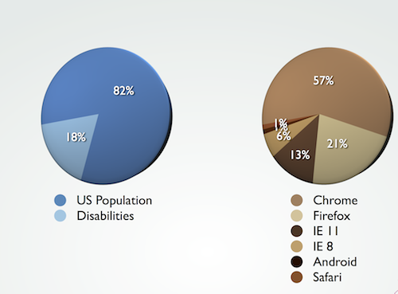

S5 Default File Structure

Improving our Process
- With minimal scripting, we have recreated and improved upon a (currently) browser-specific technology, making it cross-browser in the process
- The S5 format is OSF 1.0 compatible
- S5 is a very flexible and lightweight slide show system available for anyone to use
Improving our Apps: Accessibility
- ARIA Landmark roles
- Already mapped to common-UI elements
- Forces us to think about content and interaction
- We should be able to better identify semantic needs
- Bake it into HTML
- If we abstract our semantics, we risk the portability of our content
Improving our Apps: Accessibility

It's not just vision
- Visual
- Ranges from blindness to low-vision. Increasing as population ages.
- Auditory
- Closed captioning and alternates to sound-based interactions
- Motor
- Motor impairments which make it difficult to use typical input devices. May use specialized keyboards, eye trackers, or switch-based systems.
-
- Conditions like Autism or dyslexia that can hinder the processing of information.
Improving our Apps
By making our sites accessible, we empower many people who wouldn’t normally have access to that experience or information.
We help give people a voice who would otherwise be silent.
Basics
- Color
- Don’t rely on just color to convey meaning.
- Don't auto play video
- All controls should be keyboard accessible
- Think through your interactions
- Make sure they’re not hindering access
Improving our Apps
- Target size
- Make sure buttons and controls are easy to trigger.
- Alt text and captions
- Make sure the things that should be labeled are labeled
- Use ARIA Landmark Roles
- They’re well-supported and enhance semantics
- Be careful how you hide things
- Does the content still need to be accessible?